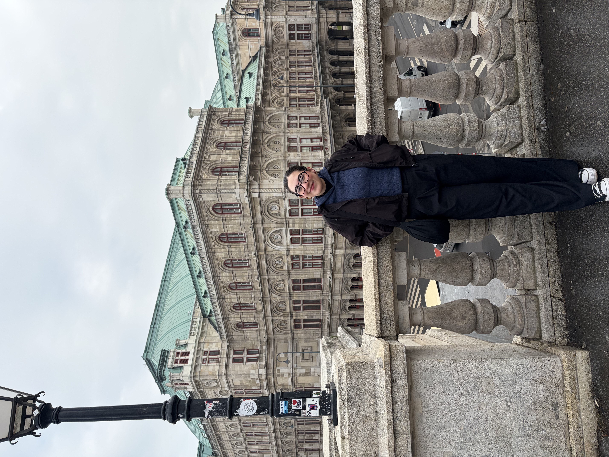

2015 — 2018
Secundaria
Instituto Bilingüe Kennedy
Formación integral y desarrollo de habilidades básicas.

Hola, soy
Correo electrónico: medinasamy424@gmail.com
Me interesan el análisis de datos, la mejora continua y gestión de calidad, la inteligencia artificial y la automatización de procesos.
Sobre mí
Soy una persona organizada, analítica y curiosa. Disfruto aprender cosas nuevas y enfrentar retos que me permitan crecer personal y profesionalmente. Me interesan el análisis de datos, la inteligencia artificial y la automatización de procesos, ya que combinan lógica y tecnología para optimizar la forma en que trabajamos con la información.
Conoce mi trayectoria académicaMi recorrido
2015 — 2018
Instituto Bilingüe Kennedy
Formación integral y desarrollo de habilidades básicas.
2018 — 2021
Universidad Tecmilenio
Preparatoria bilingüe
2021 — Actualmente
Escuela Superior de Cómputo IPN
Ingeniería en Sistemas Computacionales
Proyecto más importante
“Prototipo de aplicación móvil dedicada al acompañamiento en situaciones de estrés, dirigida a la comunidad estudiantil dela Escuela Superior de Cómputo ‘BeBetter’”
BeBetter es una aplicación móvil de acompañamiento emocional para estudiantes, enfocada en situaciones de estrés. Integra un chat de texto y voz con inteligencia artificial, capaz de adaptar el tono de la conversación, además de herramientas como diario emocional, seguimiento de hábitos y sonidos relajantes.
Un poco más sobre mí
01
Soy fanática de la historia, ya sea de México o de otros países, y he tenido la fortuna de conocer lugares muy interesantes, donde he podido aprender más sobre historia, y disfrutar de diferentes culutras.
02
Aunque también incluye los libros, paso gran parte de mi tiempo viendo las películas, leyendo, o investigando más sobre todo el mundo del Señor de los Anillos.
03
Amo descubrir géneros y artistas nuevos, aunque gran parte de lo que escucho es rock de los 70's. Mis artistas favoritos son los Beatles, Pink Floyd y Cerati.
Datos curiosos sobre
El verdadero origen del cifrado Vigenère
Giovan Battista Bellaso describió en 1553 un sistema muy parecido al que hoy llamamos cifrado de Vigenère. Blaise de Vigenère publicó posteriormente otro método más sofisticado, pero con el tiempo su nombre terminó asociado al cifrado más sencillo.
El cifrado que condenó a una reina
María I de Escocia utilizaba símbolos y códigos especiales para comunicarse secretamente mientras estaba prisionera. El criptógrafo Thomas Phelippes descifró sus mensajes relacionados con la conspiración de Babington en 1586, proporcionando evidencia crucial contra ella.
El primer disco criptográfico
Leon Battista Alberti creó alrededor de 1467 el disco de Alberti, formado por dos discos con alfabetos que podían girarse. Permitía cambiar la sustitución durante el mismo mensaje, convirtiéndose en uno de los primeros sistemas de cifrado polialfabético y precursor de máquinas criptográficas posteriores.